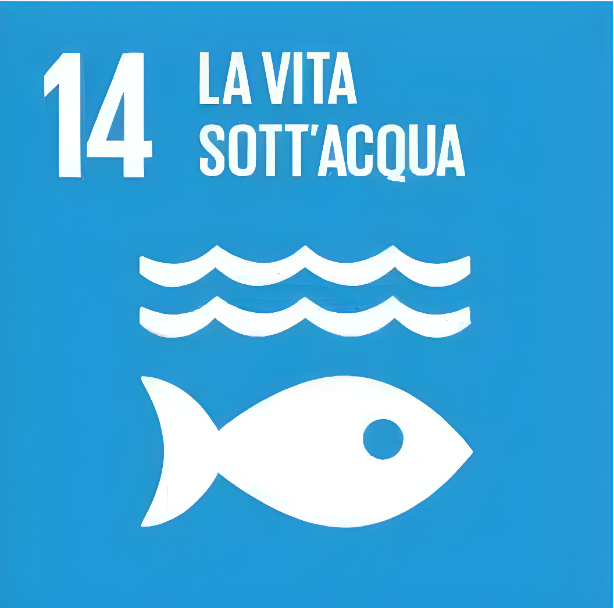

L'Obiettivo 14
L'Obiettivo 14 (SDG 14) dell'Agenda 2030 punta a conservare e utilizzare in modo durevole gli oceani, i mari e le risorse marine. Gli oceani coprono il 70% del pianeta, regolano il clima e forniscono il cibo e l'ossigeno che respiriamo. Proteggerli non e' un'opzione, e' una necessita' per la nostra sopravvivenza.

Il Mare Tiene in Vita il Pianeta
Assorbe CO2
Gli oceani assorbono circa il 30% dell'anidride carbonica prodotta dagli umani, mitigando il riscaldamento globale.
Sostiene miliardi di persone
Oltre 3 miliardi di persone dipendono dalla biodiversita' marina e costiera per il loro sostentamento.
Lavoro e futuro
La pesca e l'acquacoltura danno lavoro a milioni di persone. Un mare sano garantisce risorse ittiche per le generazioni future.
Regolazione del clima
Gli oceani trasportano calore dall'equatore ai poli, rendendo la Terra abitabile.